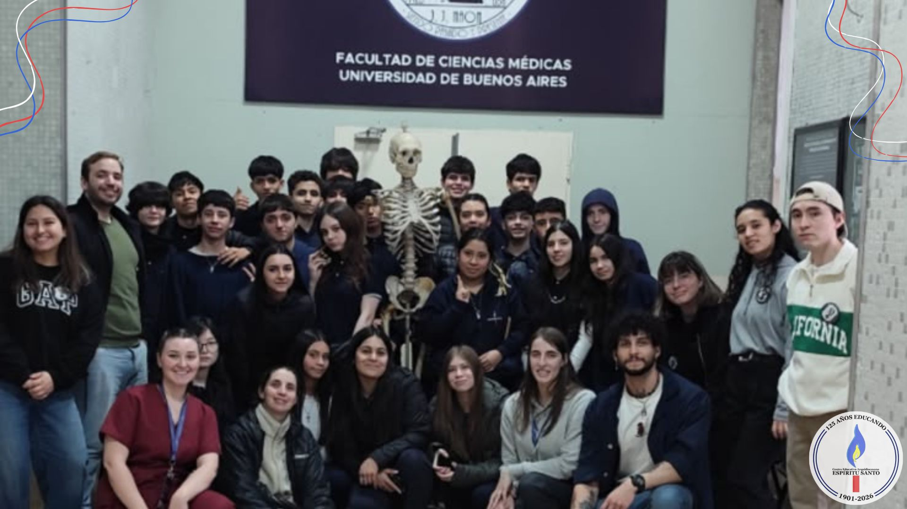

Visita al museo de la Anatomía
Por: Guadalupe Alderete y Luca Barloa

Participaron los alumnos de 2°B.
Hace unos días fuimos a visitar el museo de la anatomía en la UBA. Durante la visita pudimos conocer y observar distintas partes del cuerpo humano, como órganos, huesos y otras estructuras.
Nos pareció una experiencia muy interesante porque pudimos ver en persona cosas que normalmente aprendemos solamente en clase. También aprendimos más sobre cómo está formado nuestro cuerpo y cómo funcionan algunas de sus partes.
Lo que más nos gustó fue poder tocar un corazón real, porque nos llamó mucho la atención y nos sorprendio poder tenerlo tan cerca. Fue una de las partes que más disfrutamos de la visita porque pudimos ver y tocar algo que normalmente solo vemos en imágenes.
La visita nos gustó mucho y nos pareció una buena experiencia, ya que aprendimos de una manera diferente y pudimos conocer un poco más sobre el cuerpo humano.